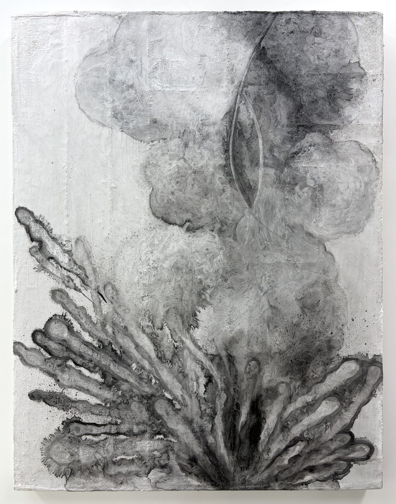

연한 폭 Faint Boom
- 연도Year
- 2026
- 재료Material
- 석고 붕대, 먹
- 크기Size
- 53×41cm
- 시리즈Series
- 석고붕대·먹Plaster Bandage & Ink
재단된 석고 붕대 조각들로 감싸진 화면 위에 폭발의 이미지가 얹힌다. 이 폭발은 고정된 듯 보이나, 시간이 지나면 서서히 흐려진다. 석고 붕대로 감싸진 화판 위에 먹선을 그으면 처음에는 또렷한 검정의 선이 드러나지만, 하루 이틀이 지나며 그 선은 점차 옅어진다. 석고에 스며든 먹은 결국 석고에 흡수되어 사라지고, 그 과정 속에서 석고의 물성이 다시 전면으로 떠오른다.
이 작업은 물성을 통해 이미지의 변화 과정을 보여준다. 이 작품은 세계적 차원의 전쟁과 개인적 차원의 다툼과 갈등이 남기는 흔적과 소멸의 과정을 물성과 이미지로 치환한다. 전쟁과 다툼은 영원히 지속되지는 않지만 끊임없이 반복된다. 그러나 그 반복의 사이에는 상처를 보듬고, 서로를 향해 연대하며, 나아가 또 다른 방향으로 전환되고 발전해가는 시간 또한 존재한다. 어쩌면 이 작품의 석고 붕대 아래에도 폭발의 흔적이 있을 수도 있다.
An image of an explosion rests on a surface wrapped in cut pieces of plaster bandage. The explosion seems fixed in place, yet over time it slowly fades. When a line of meok (Korean ink) is drawn on a panel wrapped in plaster bandage, a crisp black line appears at first, but over a day or two it gradually grows paler. The ink that has seeped into the plaster is finally absorbed and disappears, and in the process the material quality of the plaster rises to the surface once again.
This work shows how an image changes through its material. It translates into material and image the traces left by wars on a global scale and by quarrels and conflicts on a personal scale, and the way those traces fade. Wars and quarrels do not last forever, but they repeat endlessly. Yet between these repetitions there is also time for tending wounds, for standing in solidarity with one another, and for turning in a new direction and moving forward. Perhaps, beneath the plaster bandage of this work as well, there are traces of an explosion.